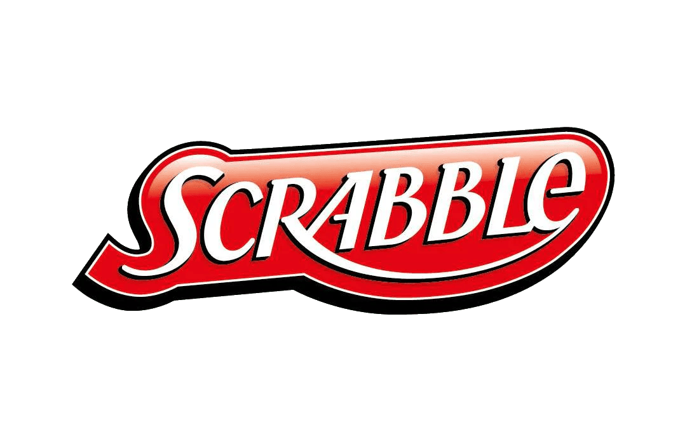
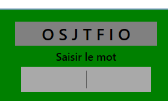

Projet scolaire
Scrabble est une application de bureau permettant de jouer à deux joueurs, développée en C# avec XAML. Cette page présente son fonctionnement, ses fonctionnalités, les technologies utilisées ainsi que plusieurs aperçus de l’application.

Type
Projet scolaire
Période
2024-2025
Statut
Terminer
Technologie principale
C# / XAML
Scrabble est une application de bureau développée en C# avec XAML, permettant de jouer à une version simplifiée du jeu de Scrabble à deux joueurs. Le jeu repose sur les règles classiques du Scrabble : les joueurs doivent former des mots à partir de lettres afin de marquer des points, jusqu’à déterminer un vainqueur. L’objectif du projet est de reproduire le fonctionnement du jeu tout en proposant une interface graphique interactive.
Application de bureau avec interface réalisée en XAML pour interagir avec le jeu.
Possibilité de jouer à deux en respectant les règles classiques du Scrabble.
Vérification des mots via une API dictionnaire intégrée à l’application.
Attribution de points en fonction des mots joués et détermination du vainqueur.
Quelques aperçus visuels de l’interface et des fonctionnalités

Interface principale
Fonctionnalité importante
Autre écran ou détail technique
Ce projet m’a permis de développer une application complète en C# avec une interface en XAML, tout en découvrant l’utilisation d’une API externe. La principale difficulté a été la compréhension du fonctionnement de l’API dictionnaire, étant donné que c’était ma première expérience avec ce type de technologie. Ce projet m’a permis de mieux comprendre les échanges de données avec une API, ainsi que la structuration d’une application avec une interface graphique. Il constitue une première expérience solide en développement applicatif.